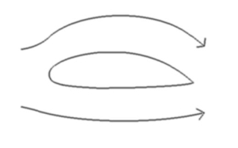
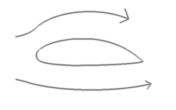
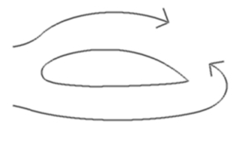
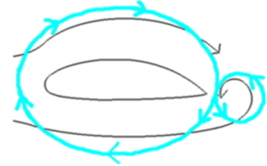
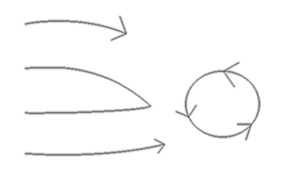

|  |
普段説明されるときに使うのがこの図です。
この図のどこが悪いのか、という前にふつう使われる説明文を引用します。
「空気が翼の前から後ろに流れる時上の空気の流れの方が下の空気の流れよりも早くなります。そのため翼の上面の圧力が低く翼の下面の圧力が高くなり、圧力の差が生じます。このため翼が上に持ち上がる力『揚力』が発生し、機体が浮き上がるのです。」
どうですわかりました？わかったようなわからないような感じがしませんか?確かに。
上の距離の方が長いから「速さ＝距離÷時間」で時間が同じで距離が増えたなら速さも増えますが。
僕はここである疑問を抱いたんです。この説明のどこに抱いたかというと本当に風は速くなるのか。
と言うことです。どういうことかというと風を人間に例えたなら、普通に歩いたら上の人は下の人より。
長い距離を歩くわけですから置いてきぼりをくうはずです、それが普通ですよね僕はそう思ったんです。 |
|  |
上の僕の意見を図にしてみました、普通こうなるはずなんです。
でもちょっとまてよ、これじゃぁ上の矢印の先の部分が真空になってしまう、。
音速の世界じゃないからそんなはずは無いはずですよね、今はふつうの飛行機の話なんですから。
というわけで次の図へ |
|  |
そうなると下の風は「おっそいなこっちから迎えに行くか」と回りこもうとするんです。
でも後ろの出っ張りが邪魔してなかなか回りこめないんです、感覚的にわかりますよね。
そうすると・・・・。
次の図へ |
|  |
下の風は渦を巻き始めます。ここで「渦は生まれるときに必ずペアの渦を作る（※）」から。
左図のように水色のペアの渦を作るんです、これは実際の風ではなくそういう力がかかっていると。
言うふうに理解しておいてください。
そうすると上の風は加速され下の風は減速します、すると上の風が速くなり圧力低下が起きます。
つまりようやくここで上の引用文がつかえるわけです。
「空気が翼の前から後ろに流れる時上の空気の流れの方が下の空気の流れよりも早くなります。そのため翼の上面の圧力が低く翼の下面の圧力が高くなり、圧力の差が生じます。このため翼が上に持ち上がる力『揚力』が発生し、機体が浮き上がるのです。」
わかりました？１回じゃこの図の説明は飲み込めないと思います。２〜３回は読んでください。
（※）ホルムヘルツの定理（難しくて僕も理解してません、これから先輩に聞いてみます） |
|  |
これはその後の図です。渦となった下の風はそのまま渦となって消え去るのみ。
この渦の説明もしたいんですがまだ勉強不足で、すいません。
|